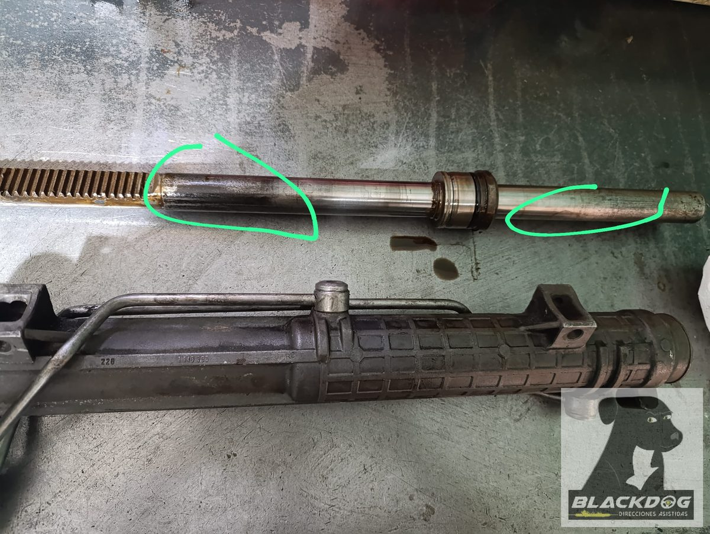
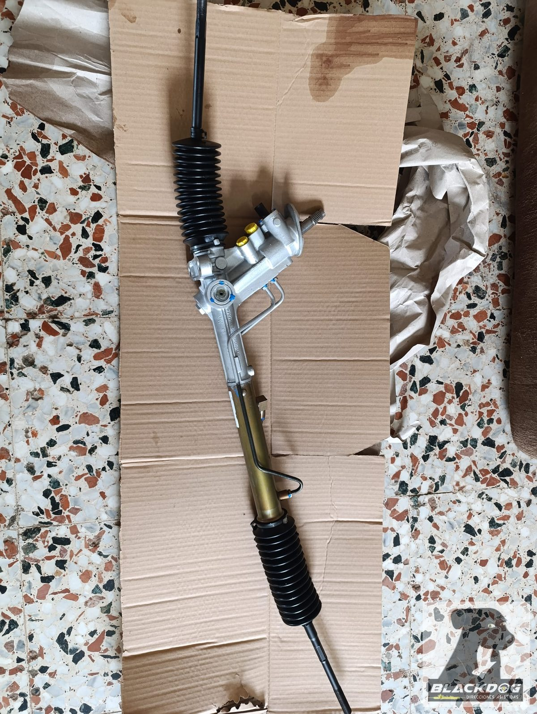
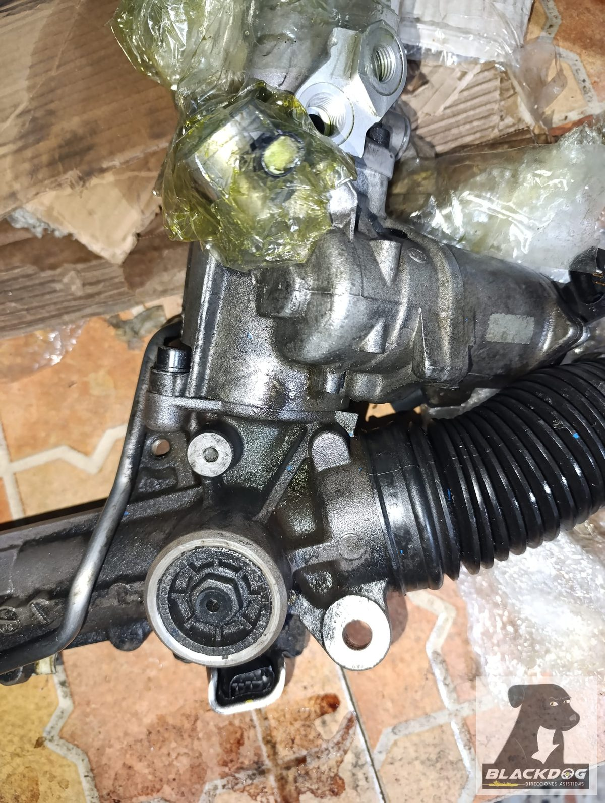
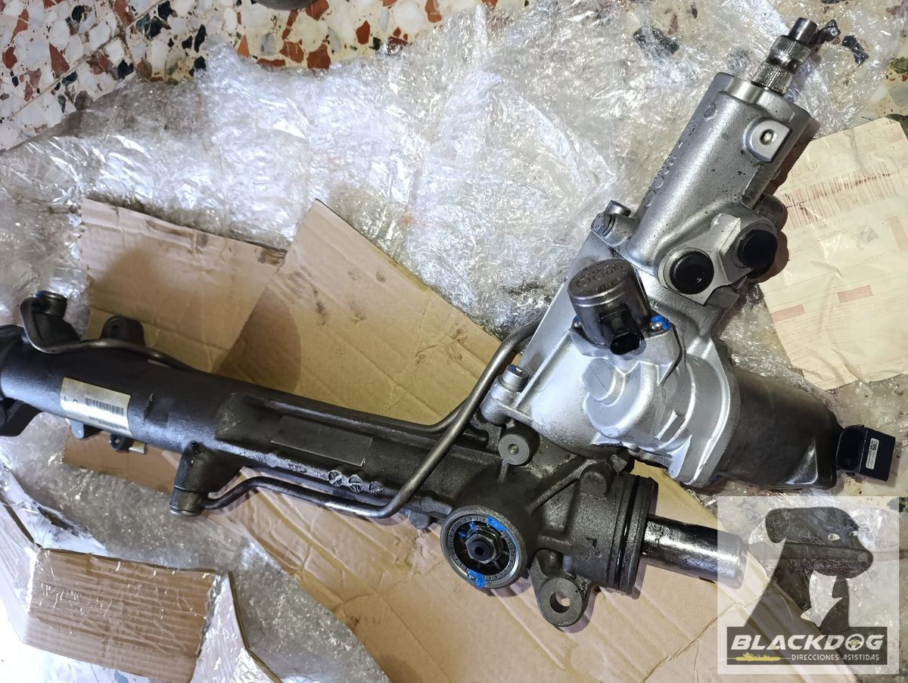
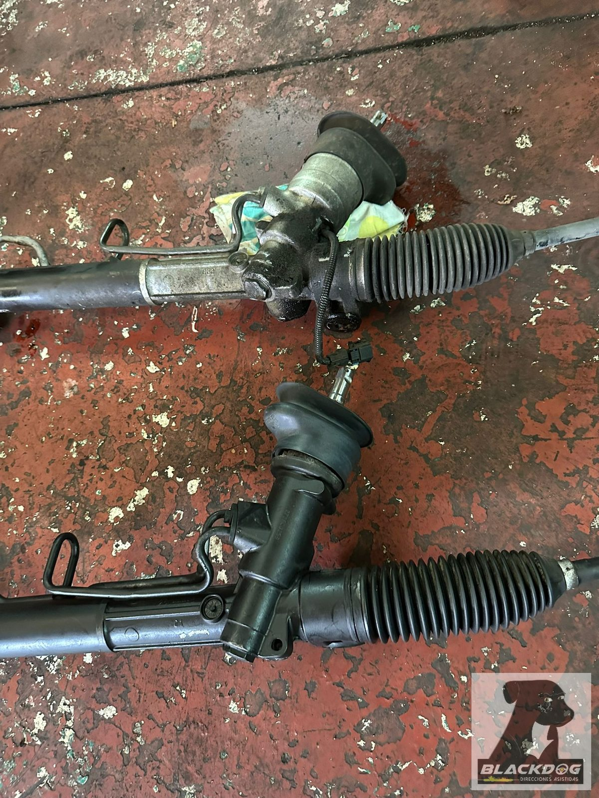
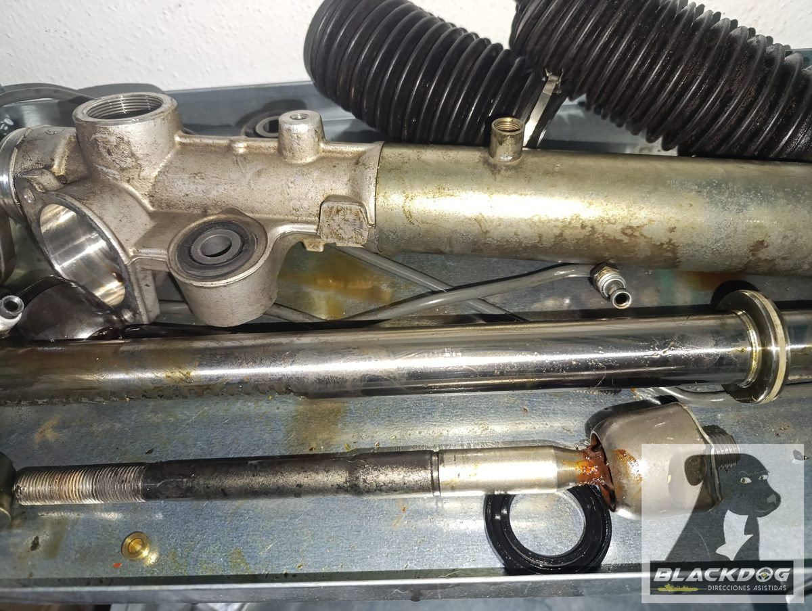
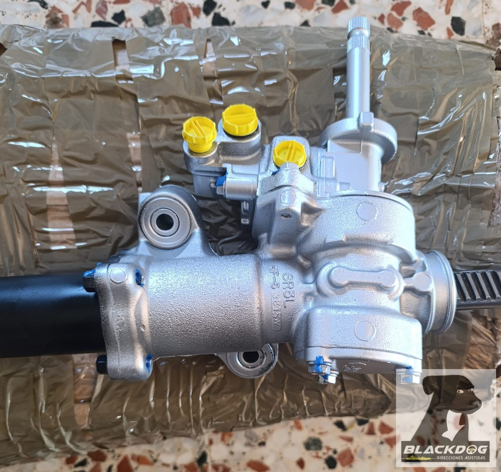
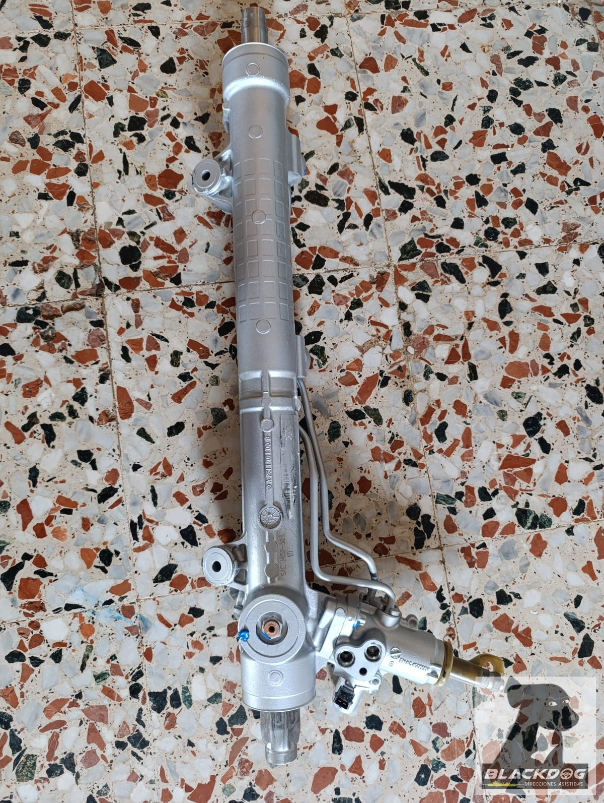
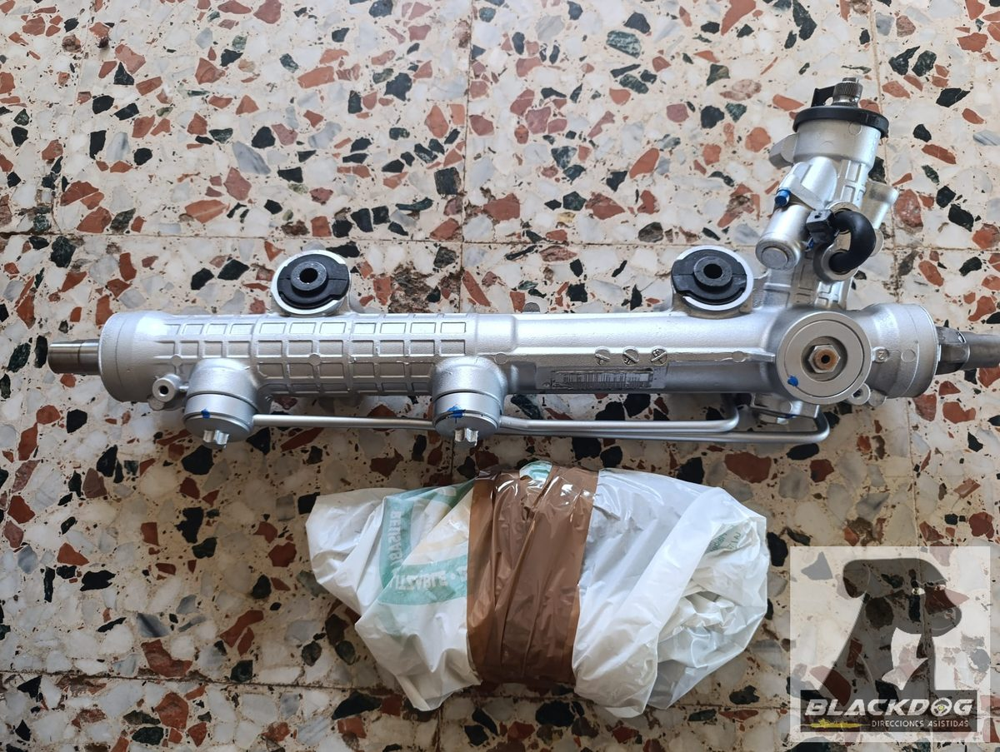
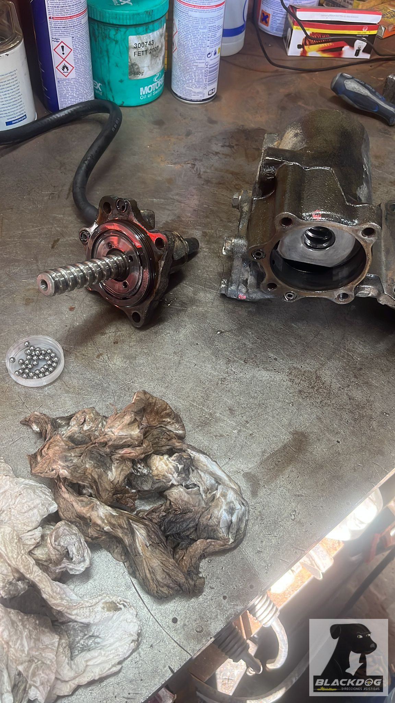

Reparación de cremalleras y cajas
de dirección hidráulica
Reparamos y reconstruimos tu pieza original: desmontamos, medimos, mecanizamos, fabricamos lo necesario y devolvemos la pieza a su función.


¿Pierde aceite, tiene holgura, hace ruido o está demasiado dura? Envíame por WhatsApp fotos de la pieza, referencia, modelo y síntoma. Te digo si tiene arreglo y te doy un precio orientativo antes de enviarla.
Foto + modelo + síntoma. Te digo si puedo repararla — antes de enviarla.
¿Y si no tiene arreglo? Te lo digo antes de cobrarte nada.
Trabajo pocos casos al mes y me gustan especialmente los difíciles: piezas que ya han pasado por otros talleres, reparaciones que han vuelto a fallar o casos para los que ya no hay recambio.
También hago trabajos sencillos, por supuesto. Pero no trabajo a volumen ni compito por ser el más barato.
Si buscas rapidez, precio bajo o las tres B —bueno, bonito y barato—, probablemente no soy tu opción. Cuando hay que reconstruir una pieza en lugar de simplemente sustituirla, hacer las cosas bien requiere tiempo y trabajo.
Te digo lo que cuesta y por qué, sin regateos: si encaja, encantado; si no, tan amigos.
TRADICIÓN FAMILIAR · +40 AÑOS · LO REPARO YO MISMO · SIN INTERCAMBIOS · ENVÍO A TODA ESPAÑA
¿Tu cremallera hace alguna de estas cosas?
Si reconoces tu problema, mándame una foto por WhatsApp.
¿Tienes uno de estos coches?
¿No aparece tu modelo? No significa que no pueda repararlo. Envíame la referencia de la cremallera y lo compruebo.
En qué te puedo ayudar
Estos son los casos en los que más me piden ayuda con la cremallera de dirección hidráulica. Si el tuyo es alguno de ellos, cuéntamelo y lo vemos juntos.
Sin recambio o descatalogada
Tu cremallera o caja de dirección ya no se fabrica, no la encuentras en ningún sitio, o el intercambio no existe. La reconstruyo sobre tu propia pieza. Más sobre estos casos →
Rara, antigua o especial
Clásicos, 4x4, furgonetas, modelos poco comunes donde nadie más se mete. En esos me siento como en casa.
Ya reparada y sigue fallando
Te la arreglaron en otro sitio y volvió a perder aceite, a hacer ruido o a tener holgura. La dejo bien, probada y a punto.
Ruido, holgura, fugas o tirones
Dirección que hace ruido, tiene juego, pierde aceite o da tirones al girar. Son los síntomas que más veo, y casi siempre tienen solución.
Compra equivocada en un intercambio
¿Te han mandado una pieza que no es la correcta y te tienen dando vueltas? Te ayudo a identificar qué necesitas de verdad y a salir del bucle.
Solo la vende el concesionario, y carísima
Si te han dicho que esa pieza "solo existe nueva, en el concesionario" y el precio es abusivo, antes de resignarte pregúntame. Muchas veces sí tiene arreglo, y sale bastante más barato.
Reparación de cajas de dirección de camiones
Iveco Daily, Ford Transit, VW Transporter, Mercedes Sprinter y similares. Las cajas de dirección de vehículos de trabajo tienen sus propias particularidades — presiones más altas, retenes calcinados por uso intensivo. También las reparo.
¿Está tu coche en esta lista?
Estos son los modelos que más pasan por el taller. Si el tuyo no aparece, escríbeme — lo más probable es que lo haya visto antes.
Si tu modelo no aparece, escríbeme con la referencia de la pieza — es muy probable que lo haya visto antes o que pueda fabricar lo que necesitas.
Quién hay detrás de Blackdog
Más de 40 años de tradición familiar y 20 años especializado exclusivamente en dirección asistida. La historia completa en la página Sobre mí.
Leer la historia completaDe tu problema a la solución
Estés donde estés en España, así de sencillo:
Cuéntame el caso
Me escribes por WhatsApp con tu coche y unas fotos de la pieza.
Estudio y presupuesto
Miro tu caso concreto y te digo con honestidad si tiene solución y cuánto.
Me envías la pieza
La recoge el transporte en tu puerta y llega a mi taller.
La reconstruyo y vuelve
Reparada, probada y de vuelta a tu casa, lista para montar.
Estas fotos (o un vídeo) ayudan mucho
Si puedes hacerlas, me hago una idea real del caso a la primera. Y si todavía no la tienes fuera, no importa — escríbeme igual y las vemos más adelante.
Foto completa de la pieza
La cremallera o caja entera, para ver su estado general.
Foto de la referencia
El número grabado en la pieza, si lo encuentras.
Foto o vídeo de la zona del problema
Donde pierde aceite o tiene el golpe. Si el problema es un ruido, mejor mándame un vídeo corto con el motor en marcha — un ruido se explica fatal por escrito, pero se escucha en un segundo.
Marca, modelo, año y motor
Si lo sabes, dímelo también — si no, no pasa nada.
Lo que debes saber
Para que no haya sorpresas, esto es lo que puedes esperar del proceso.
La valoración orientativa es gratuita
Con las fotos identifico el modelo exacto y me hago una idea del estado, para darte un precio orientativo. El precio real solo se sabe al desmontarla — dar una cifra cerrada antes sería jugármela, y prefiero no comprometerme a algo que luego no cuadre.
Recogida con MRW en tu puerta
Trabajo con MRW desde siempre — no es la agencia más barata, pero es en la que confío. Recogen la pieza donde tú me digas, sin que tengas que moverte.
Si no tiene arreglo, no pagas nada
Te lo digo con honestidad al verla. Si no merece la pena, te la devuelvo sin coste de reparación.
Pago y garantía · condiciones completas →
No pagas por adelantado. Primero reviso la pieza, la reparo, la pruebo, y solo entonces te confirmo el importe final y te la envío. Pagas cuando la reparación está lista y comprobada — estanqueidad, holgura y recorrido según el tipo de pieza — por transferencia o Bizum. La garantía cubre los recambios siempre que el montaje lo realice un taller autorizado siguiendo las indicaciones del técnico. Los gastos de transporte son a cargo del cliente, salvo cuando el fallo sea claramente imputable a la reparación, en cuyo caso la recogida corre a cargo de BLACKDOG. Te explico los costes antes de recoger la pieza. Leer condiciones completas →
El plazo depende del caso
Muchas las dejo listas en pocos días. Pero me dedico sobre todo a los casos difíciles — los que otros talleres no quieren —, y esos a veces llevan más, o hasta una semana si hay que fabricar una pieza a medida. Prefiero tardar un poco más y dejarlo bien, que ir rápido y que vuelva a fallar.
Lo que más me preguntan
¿Quién repara cremalleras descatalogadas o sin recambio?
Soy Julián Márquez, especialista en Gerena (Sevilla) con más de 40 años de tradición familiar en el oficio, los últimos 20 dedicado en exclusiva a cremalleras y cajas de dirección hidráulica. Trabajo casos que otros talleres no aceptan, y envío/recibo piezas de toda España.
¿Reparar la original o comprar una de intercambio?
Casi siempre es mejor reparar la original. Las piezas de intercambio, aunque tengan la misma referencia, a veces no son exactamente iguales y acaban dando problemas. Reconstruyo tu propia pieza.
El concesionario me la cobra carísima, ¿qué hago?
Antes de asumir ese gasto, consúltame. Muchas piezas que el concesionario da por irreparables sí tienen arreglo, y sale bastante más económico.
¿Cuánto cuesta reparar una cremallera de dirección?
La mayoría de reparaciones están entre 135€ y 350€, portes incluidos. Depende del modelo y el estado de la pieza. Con fotos puedo darte una orientación antes de que la envíes — el precio definitivo se confirma al desmontarla. Si no tiene arreglo, no pagas.
¿Tu caso es de los difíciles?
Mándame una foto y tu modelo. Te digo con honestidad si tiene solución — sin compromiso.
Casos reales de reparación de cremalleras y cajas de dirección
El museo de los marrones
Situaciones donde hace falta el torno, medir en centésimas y fabricar piezas que no existen. Si te han dicho que no tiene arreglo, quizás es que no han visto este torno.
Busca tu caso
Filtra por síntoma para ver casos parecidos al tuyo. Si no encuentras el tuyo, escríbeme: lo más probable es que lo haya visto antes.
Avería: Holgura extrema en la dirección activa. En algunos casos el concesionario presupuesta el cambio de unidad completa a precios muy elevados.
Rectificado y ajuste de precisión centesimal en el grupo de más de 150 bolas internas que se clavan en el eje por impactos o baches. Se salva el eje original.
Técnico: El conjunto de bolas no es visible desde fuera — la diagnosis electrónica no lo detecta. Solo se ve al abrir la unidad.
Avería: Ruido seco y golpeteo al girar. La diagnosis no encuentra ningún fallo. Varios talleres sin diagnóstico.
Detección de holgura vertical en el eje de dirección. Fabricación de casquillos a medida para eliminar el golpeteo que la electrónica no detecta.
Técnico: La holgura vertical no aparece en ningún código de error. Solo se detecta con la pieza en mano y midiendo.
Avería: Columna de dirección o cremallera eléctrica con dureza, tirones o bloqueos intermitentes.
Diagnóstico mecánico sobre la pieza. Resolución del problema en el módulo y la columna sin cambiar la unidad completa.
Avería: Cremallera con ejes oxidados y picados por entrada de agua y barro. Sin recambio nuevo disponible.
Rectificado de ejes picados y fabricación de sellos y casquillos de sobremedida para compensar el desgaste del acero original. Se salva la pieza original del cliente.
Técnico: Rectificar un eje oxidado exige trabajar con precisión. Un casquillo de sobremedida mal ajustado reproduce la holgura en pocos meses, o incluso clava la cremallera.
Avería: Caja de bolas con inestabilidad al centro del volante. Recambio comercial descatalogado.
Sustitución de ejes dentados y ajuste del conjunto de bolas. Cuando el recambio no existe, se fabrica.
Técnico: La inestabilidad al centro es difícil de diagnosticar en carretera pero clarísima al medir la holgura con la pieza en banco.
Avería: Caja de dirección que tira líquido por las puntas. Retenes calcinados por temperatura y presión de uso intensivo.
Reparación de retenes y sellado de la caja. En camiones la presión hidráulica es mucho mayor que en turismos — los sellos hay que fabricarlos a medida.
Avería: Sistemas hidráulicos de clásicos donde los casquillos y juntas llevan décadas sin fabricarse.
Fabricación artesanal de casquillos y juntas a medida. La única opción cuando el mercado dice que no existe.
Técnico: El Citroën DS usa un sistema hidráulico de alta presión único. No hay catálogo universal que lo cubra.
Avería: Carcasa remachada de fábrica que "no se puede abrir". El mercado lo da por irreparable.
Apertura mediante eliminación de remaches en el torno. Reparación interior. Re-remachado de seguridad para cerrar. Sale como de fábrica.
Técnico: Muchos talleres devuelven estas piezas sin abrirlas. La apertura por torno requiere precisión para no dañar la carcasa.
"Si te han dicho que no tiene arreglo, quizás es que no han visto este torno."
Avería: Cremalleras de clásicos deportivos. Sin piezas en el mercado. El cliente no quiere montar componentes que no sean de la época.
Fabricación en el acto de las piezas que hacen falta: casquillos, sellos, ejes. Todo sobre la pieza original para mantener la fidelidad del vehículo.
Avería: Eje picado, oxidado o con desgaste que otros talleres darían por inservible.
Sustitución o rectificado del eje según el estado. Eliminando corrosión y ajustando el diámetro con precisión de micras. La pieza sale dimensionalmente correcta, sin material de relleno.
Técnico: Cuando el eje tiene solución: rectificamos hasta el diámetro justo y fabricamos el casquillo que encaja. Cuando no la tiene: lo sustituimos. Nunca soldamos ni rellenamos para disimular. El resultado es una pieza a medida que encaja perfectamente en la cremallera original.
Avería: Carcasa de aluminio con tubo fisurado o pestaña partida. El mercado dice: chatarra.
Soldadura técnica de reparación. Las carcasas de aluminio de dirección son piezas caras — si se puede soldar, se suelda.
Técnico: No todas las fisuras son soldables. Si no tiene reparación, lo digo antes de cobrar nada.
Avería: El cliente quiere saber que no hay chapuzas debajo.
Las piezas se devuelven sin pintar en casos que el cliente lo solicite para que el mecánico que las monte vea exactamente lo que hay: sin soldaduras ocultas, sin porosidades, sin spray encima.
Técnico: Un spray de pintura puede esconder mucho. Aquí no escondemos nada.
Lo que llega al taller de verdad
Conversaciones reales con clientes. Modelos, averías y soluciones documentadas.
Avería: Fuga por el retén del eje — fallo muy común en esta cremallera. La holgura desgastaba el sello progresivamente.
Reparación con garantía de un año. 242€ total con portes e IVA incluidos (precio final, con la pieza ya vista).
"Está montada ya y perfecta, me dijo que al principio estaría la dirección más durita pero bien."
Avería: Cremallera sin recambio nuevo. Bomba defectuosa metiendo aceite de motor dentro de la dirección.
Sellos y casquillos fabricados a medida sobre la pieza original del cliente. Sin intercambios.
Técnico: Las cremalleras de Land Cruiser se caracterizan por una geometría no perfecta — hay que ajustar bien o la holgura vuelve.
Avería: Cremallera de clásico. Sin recambio en ningún sitio. El cliente había tenido mala experiencia previa en otro taller.
Rectificado del eje, sellos nuevos a medida. Reparación completa sobre la pieza original.
"Espero que se pueda reparar, tengo mala experiencia de otra casa que intentó reparar la otra que tengo puesta."
Avería: Caja de dirección integral. Holgura tan severa que al girar el volante había un tramo donde la dirección no se movía.
Reconstrucción completa de la caja de dirección. Recogida con MRW directamente en el taller del cliente.
Técnico: Eso es bastante holgura — cuando hay un tramo muerto en el volante, la caja está muy comprometida.
Avería: Cremallera perdía líquido. Bomba que en frío funcionaba bien pero en caliente se quedaba gripada y no giraba. Eje oxidado.
Rectificado de eje, reparación de cremallera y bomba. Probada antes de devolver. Precio mantenido aunque el trabajo fue mucho mayor.
Técnico: Esa dirección tiene mucho trabajo y más si hay que rectificar — pero el precio se lo dejé igual.
Avería: Cremallera en muy mal estado. Para sustituir el sello había que cortar el pistón, tornearlo y fabricar uno nuevo desde cero.
Reconstrucción compleja. El cliente aprovechó el desmontaje del diferencial para repararla a la vez. Enviada y recogida con MRW.
Avería: Eje con holgura, guardapolvos rotos, fuga de aceite. Casquillos y sellos muy desgastados. El mecánico lo confirmó al desmontar.
Sustitución de eje, casquillos y sellos fabricados a medida. La cremallera sale de aquí como nueva.
Técnico: La cremallera son dos ejes dentados — cuando los dientes tienen holgura hay que sustituir el eje.
Avería: Cremallera de dirección activa con holgura. Pieza especial, muy cara, sin intercambio de confianza en el mercado.
Caso complejo que requiere mucho cuidado en el desmontaje. Reparación sobre la original.
Técnico: Poner una dirección activa de desguace tampoco es buena opción — hay que tener cuidado de que sea exactamente la misma.
Avería: Caja de dirección con fuga de líquido. Al montar la reparación surgió una duda de centrado del volante — resuelta.
Reparación completada. El cliente confirmó el resultado a la semana de montarla.
"Se montó bien y funciona bien, de momento a día de hoy no tiene pérdida de líquido. Perfecto."
Otros casos documentados
Audi, BMW, Volvo, Kia, Nissan, Suzuki, VW, Seat, Mini — de talleres y particulares de toda España.
Avería: Fuga de líquido hidráulico. El mecánico del cliente no había detectado el problema real: el eje muy oxidado y con picaduras.
Rectificado del eje o sustitución. Reparación completa sobre la pieza original enviada desde Toledo.
Técnico: La fuga era el síntoma. La causa real era el eje con picaduras — sin rectificar, cualquier sello nuevo vuelve a fallar.
Avería: Holgura en la cremallera. Tras la reparación el cliente nota que el volante no retorna bien al centro al salir de curva.
Diagnóstico diferencial: se separa el problema de la cremallera del problema de la geometría. Revisión y ajuste.
Técnico: Cuando el volante no retorna es tentador culpar a la cremallera, pero a veces es la geometría o los brazos de suspensión.
Avería: Ruido de 'clic clic clic' al girar. El cliente había encontrado otra cremallera de segunda mano al mismo precio.
El cliente decidió reparar la original en vez de apostar por la de segunda mano. Holgura en casquillo tensor.
Técnico: Una cremallera de Wallapop al mismo precio que reparar la original parece tentador, pero no sabes lo que tienes.
Avería: Cremallera con fugas, holgura en la caja de válvulas y eje desgastado. El nivel de desgaste impedía dar garantía.
Julián dio al cliente un informe escrito del estado real de la pieza para que pudiera reclamar. Honestidad por encima de vender la reparación.
Técnico: Cuando una pieza no merece la pena reparar, lo digo. En este caso el cliente necesitaba el informe para su seguro.
Avería: Taller de reparación con varias cremalleras pendientes: Audi A4, Peugeot Partner con rotulas y Opel Zafira con fuga.
Tres reparaciones en paralelo. Cada pieza tratada por separado según su avería específica.
Avería: Ruido al pasar por baches. El mecánico del taller dijo que no había holgura. Julián detectó holgura interior — invisible desde fuera.
Reparación con casquillado interno. El Passat 3C tiene una holgura interior característica que no se aprecia sin desmontar.
Técnico: Ese tipo de dirección suele coger holgura interior — no se ve hasta que abres la unidad.
Avería: Cremallera del Volvo S60 con fuelles rotos y pérdida de líquido. Cliente de Olivares (Sevilla) que la trajo directamente al taller.
Reparación completa con sustitución de fuelles y sellado. El cliente la llevó personalmente al taller.
Avería: Cremallera y bomba de dirección en mal estado. Ambas piezas enviadas juntas para reparar.
Reparación simultánea de cremallera y bomba. Cremallera 135€, bomba 90€, con portes e IVA (precio final, con las piezas ya vistas). Enviado con MRW.
Avería: Kia Sorento con holgura y vibración. El cliente también consultó por un Suzuki Jimny con holgura severa en la caja de dirección.
Las cajas de bolas de dirección son muy precisas. Cuando las bolas se desgastan la vibración se transmite al volante.
Técnico: Las bolas de precisión de la caja de dirección son difíciles de encontrar — hay que asegurarse de que son exactamente las correctas.
Avería: Holgura principal en el punto medio — se nota al ir recto. Golpe seco ('clock') al girar hacia el lado del conductor.
Rectificado y casquillo a medida para la holgura vertical del eje. La dirección tenía más de 15 años.
Técnico: La holgura en el centro puede comprometer la precisión direccional a velocidad alta. Conviene revisarla cuanto antes.
Avería: Fuga con aceite que olía raro. Al desmontar: aceite mezclado con agua y fragmentos de rodamiento de aguja dentro de la bomba.
Limpieza completa del circuito de dirección, reparación de la caja y sustitución de componentes dañados.
Técnico: Aceite con agua dentro del sistema es una señal de alarma grave — la contaminación destruye todos los sellos.
Avería: Taller profesional con cremallera de Suzuki y luego una Iveco Daily que va dura. Fuga por el eje de la caña de dirección.
Suzuki lista en 13 días. Iveco Daily diagnosticada como dirección dura. Taller recurrente.
Técnico: Cuando un taller empieza a mandarte piezas de forma recurrente, es la mejor prueba de que el trabajo queda bien.
Avería: Holgura en la cremallera del M3. Según el cliente 'iba bien pero tenía holgura'. La ITV no la rechazaba pero se notaba.
Sustitución de eje. 145€ + IVA + portes (precio final, con la pieza ya vista). Recogida con MRW.
Técnico: En un M3 cualquier holgura se amplifica — el coche es muy directo y cualquier imprecisión en el volante se nota.
Avería: Mini con dirección eléctrica. Ruido al bachear y holgura. Los casquillos de la cremallera eléctrica estaban desgastados.
Diagnóstico de holgura en cremallera eléctrica. Reparación sobre la original.
Técnico: Las direcciones eléctricas también tienen casquillos mecánicos que se desgastan — no todo es electrónica.
Avería: Fuga progresiva de líquido. El cliente preguntó exactamente qué se desmontaba, qué se cambiaba y si quedaría bien.
Reparación completa con cambio de retenes y rectificado donde había holgura. El cliente eligió reparar la suya antes de apostar por un intercambio.
"Yo prefiero reparar la mía desde cero, que te asegures que no perderá líquido."
Avería: Holgura en el eje de la cremallera. El cliente preguntó si se cambiaban todos los retenes o solo los que fallan.
Encasquillado de la holgura + cambio de retenes. Se explica al cliente exactamente qué se hace y por qué.
Técnico: Hasta que no veo la cremallera no puedo darte un precio exacto — hay cosas que solo se ven al abrirla.
Fotos del taller
Piezas reales que han pasado por el taller. Cada foto tiene su historia.










¿Tu coche podría ser el siguiente?
Mándame una foto de la pieza y el modelo. En muchos casos hay solución.
Un perro, un padre y un oficio
Más de 40 años de tradición familiar y 20 años especializado exclusivamente en dirección asistida. Nada más, nada menos.
En 20 segundos: soy Julián Márquez. Llevo unos 20 años dedicado en exclusiva a cremalleras y cajas de dirección, después de aprender el oficio en una tradición familiar de más de 40 años. No soy un taller generalista — trabajo solo dirección, y en concreto los casos que otros talleres no aceptan o ya no encuentran en el mercado. Si no tiene arreglo, te lo digo y no te lo cobro.
Blackdog nació de una historia muy personal. El nombre viene de un perro negro que se crió en el taller de mi padre — de pequeño, yo iba allí a verlo a él y a ver cómo trabajaba. Entre herramientas, piezas y muchas horas de taller fui aprendiendo un oficio que, con el tiempo, se convirtió en mi forma de vida.
Mi padre hacía prácticamente de todo: cajas de cambios automáticas, direcciones asistidas, cajas de dirección, bombas, transmisiones. De él aprendí casi todo lo que sé. Pero también aprendí su mejor lección: «el que mucho abarca, poco aprieta». Y decidí aplicármela: centrar mi trabajo en cajas y cremalleras de dirección. No porque no sepa hacer otras cosas — porque quise conocer estas piezas a fondo. Cuando tienes un problema de dirección, no necesitas a alguien que haga un poco de todo. Necesitas a alguien que conozca esa pieza y sus soluciones.
Llevo unos 20 años enfocado en exclusiva al sistema de dirección. Mi padre, que fue quien me enseñó el oficio, lleva más de 40. Fui de los primeros especializados en direcciones con presencia en internet — mi web lleva activa desde 2015. Buena parte de mi trabajo es rescatar casos que han quedado a medias en otro sitio: piezas que vuelven a fallar, compras de segunda mano sin revisar, averías mal diagnosticadas. Eso me enseñó que reparar no es solo desmontar y montar — primero hay que entender qué pasa de verdad. Como decía mi padre, el dinero del pobre va dos veces al rico.
Cuando la pieza no tiene recambio, no me limito a montar algo que "más o menos vale". Rectifico, hago sellos y juntas a medida cuando ya no se fabrican — a veces hemos tenido que sustituir el eje y poner sellos a medida varias veces hasta dar con la solución definitiva. Es la diferencia entre un apaño y una reparación que dura.
Para los componentes internos (rodamientos, conjuntos de bolas, piezas de precisión) me gusta trabajar con las mejores marcas disponibles, aunque me adapto al cliente y al caso. Y cuando ni eso existe, porque el modelo es demasiado raro o antiguo, la fabrico a medida.
No necesitas saber de direcciones para hablar conmigo. Me cuentas qué le pasa al coche, me mandas la pieza, y yo hago mi parte: revisarla, entender qué tiene y decirte con honestidad cuál es la mejor solución. Y si no merece la pena repararla, te lo digo igual. Prefiero perder una reparación antes que hacerte gastar en algo que no necesitas — la confianza no se consigue diciendo siempre que sí, se consigue diciendo la verdad. Con todos estos años de casos difíciles a la espalda, cada vez me sorprende menos lo que llega al taller.
Y una cosa más, para ser sincero del todo: no somos perfectos. Como cualquiera que trabaja con las manos, podemos equivocarnos. Pero si eso pasa, estaré ahí para responder y escucharte, no para desaparecer — siempre con respeto ante todo.
Un último apunte honesto: no soy el taller más rápido ni el más barato, y no quiero serlo. Trabajo poco, pero me lo tomo en serio: elijo los casos difíciles, los que ya han rebotado en varios talleres, los que necesitan fabricar una pieza que ya no existe. Si buscas rapidez y el precio más bajo, seguramente haya opciones mejores que yo — y está bien, cada uno elige. Pero si tu caso es de los que dan pereza a los demás, ese es exactamente el mío.
A veces nos cuesta dinero investigar una reparación.
Pero llega un momento en que ya no es cuestión de números.
Es cuestión personal.
No quiero que dependas de mis conocimientos. Quiero que puedas confiar en ellos.
Dicen que en casa de herrero, cuchillo de palo — y no te voy a engañar, mi propio coche a veces se queda el último de la lista. Pero con la dirección que me mandas no pasa lo mismo: la trato mejor que la mía.
Me llamo Julián. Un saludo.
Lo que me diferencia de un taller normal
Solo hago esto
No reparo frenos, no hago cambios de aceite, no vendo neumáticos. Solo cremalleras y cajas de dirección. Esa especialización me permite conocer estas piezas a un nivel que un taller generalista no puede alcanzar.
Tu pieza original
Siempre que es posible, reparo la pieza que tú ya tienes. No busco un intercambio "que más o menos encaje". Una pieza de intercambio, aunque lleve la misma referencia, a veces no es exactamente igual y puede dar problemas.
Fabrico lo que no existe
Cuando los sellos, juntas o rodamientos ya no se fabrican, los hago a medida. Eso es lo que significa "reparar una pieza descatalogada" de verdad: no decirle al cliente que no tiene solución, sino fabricar la solución.
Marcas de primera
Para los componentes internos (rodamientos, conjuntos de bolas, piezas de precisión) me gusta trabajar con las mejores marcas disponibles, pero me adapto según el caso y el cliente.
Probada antes de salir
Cada pieza se comprueba a presión (estanqueidad), holgura, recorrido completo y par de giro antes de enviarse. No sale hasta que pasa las cuatro pruebas.
Te digo la verdad
Si una pieza no tiene arreglo, te lo digo. No me interesa hacerte gastar en algo que no va a funcionar — prefiero perder esa reparación antes que perder tu confianza.
¿Crees que tu caso es para mí?
Cuéntame qué tienes y te digo con honestidad si puedo ayudarte.
Los casos que no deberían haber sido rentables
Hay trabajos que compensan en números. Y hay trabajos que se terminan por otra razón.
Ya que me he metido, quiero acabarlo
El sistema LHM del DS es una obra de ingeniería adelantada veinte años a su época. El recambio estándar no servía. Lo intenté dos veces. Dos veces fallé.
A esas alturas ya había perdido tiempo y dinero. La decisión económica correcta era devolverla.
Pero no lo hice. Fabriqué las piezas en el torno. La dirección quedó impecable y el coche volvió a rodar.
No fue rentable. Pero ya no era cuestión de números.
El cliente pagando un coche de alquiler
El taller presionaba porque el Jeep ocupaba un elevador. El cliente llevaba días pagando un coche de alquiler. Los recambios fallaban. Los plazos se alargaban.
Podría haberme amparado en que no dependía de mí. Pero el cliente tenía un problema real.
Lo terminé. No porque compensara. Porque no me parecía justo dejarlo tirado.
Lo que sí puedes controlar es no rendirte.
Fabricar lo que ya no existe
Para estos Jaguar no existe recambio válido. El desgaste del acero requiere un ajuste centesimal que ninguna pieza estándar puede dar.
Llegué a decirme: "Se me ha ido bastante de tiempo y estoy perdiendo dinero. No renta."
Seguí. Fabriqué los casquillos en el torno. La dirección quedó firme.
Hay piezas que no tienen solución comercial. Solo artesanal.
El trabajo que valía más de lo que cobré
Para llegar a la cremallera hay que desmontar medio coche: puente, diferenciales, palieres. Un trabajo que casi nadie quiere tocar.
Hice el trabajo. Valía mucho más de lo que cobré. La relación se rompió porque en sistemas así de machacados no se puede garantizar el 100%.
Lo dije. No lo aceptó. Esa reseña negativa sigue en esta web porque también forma parte de la historia real.
Prefiero cerrar un caso antes que prometer imposibles.
Estos casos están en la web porque demuestran algo que no se puede escribir en un eslogan.
Si tienes una pieza que otros no han querido tocar, cuéntamelo.
Consultar mi caso →Garantía y condiciones
Las condiciones exactas que aplican a todas las reparaciones. Sin letra pequeña ni sorpresas.
Las 4 pruebas antes de devolvértela
Ninguna pieza sale del taller sin pasar estas cuatro comprobaciones. Te lo cuento para que sepas exactamente qué estás pagando.
Estanqueidad
No pierde aceite por ningún punto. Se prueba con presión sostenida durante el tiempo necesario para detectar cualquier microfuga.
Holgura
El juego en la dirección está dentro de tolerancia. Una cremallera reparada bien no debería tener más juego que una nueva.
Recorrido completo
Se comprueba de tope a tope que no hay bloqueos, puntos duros ni irregularidades en el giro.
Par de giro
El esfuerzo necesario para girar la dirección es el correcto: ni demasiado duro ni demasiado ligero.
Qué cubre y qué no cubre
Lo que garantizo
Cualquier fallo de funcionamiento directamente atribuible a la reparación realizada:
- Fugas en los puntos sellados o reparados
- Holgura que reaparece en la zona tratada
- Deterioro prematuro de componentes que instalé
- Cualquier defecto del trabajo realizado en el taller
Plazo: 1 año desde la fecha de entrega.
Exclusiones
- El montaje y desmontaje en el vehículo
- Desgaste normal de uso
- Daños por suciedad, aceite viejo o fuelles rotos
- Averías ajenas a la pieza que reparé
- Daños causados por un montaje incorrecto
- Piezas que se repararon parcialmente a petición del cliente
Si algo falla, esto es lo que pasa
Me lo cuentas
Me escribes por WhatsApp con una descripción del problema y, si puedes, un vídeo o foto. Respondo siempre.
Valoramos juntos
Hablamos del caso. Si el fallo encaja claramente con la reparación, coordinamos la recogida sin coste para ti.
La inspecciono
La reviso en el taller. Si el fallo es mío, la reparo y te la devuelvo. Si no lo es, te lo explico con honestidad.
Portes
Si el fallo es claramente de la reparación, los portes corren de mi cuenta. Si tras inspeccionarla resulta que no lo es, el porte lo asume el cliente.
Lo que más me preguntan sobre la garantía
¿La garantía cubre si el mecánico la monta mal?
No. La garantía cubre la pieza reparada, no el montaje posterior. Si el mecánico que la instala comete un error, eso queda fuera de la garantía. Por eso siempre recomiendo que la monte alguien de confianza.
¿Qué pasa si el problema ya existía antes de enviarla?
Si hay algún fallo que no se detectó en las pruebas iniciales y aparece en los primeros días de uso, lo revisamos sin problema. Para eso están las primeras semanas — llámame si ves algo raro al montarla.
¿Y si han pasado más de un año?
Fuera de garantía ya no tengo obligación de asumir el coste, pero puedo revisarla igualmente. Si el fallo es claramente un defecto del trabajo y no desgaste, siempre lo miramos — prefiero hacer las cosas bien que mirar el calendario.
¿Puedo pedir el presupuesto antes de enviarla?
Sí, y es lo que recomiendo. Con fotos de la pieza te doy una orientación del coste. El precio exacto solo se sabe al desmontarla, pero así vas con una idea antes de enviármela.
Texto íntegro de la garantía
Estas son las condiciones exactas que aplican a todas las reparaciones realizadas por Blackdog Direcciones Asistidas.
Condiciones de garantía
Blackdog Direcciones Asistidas ofrece garantía sobre todos los recambios siempre y cuando el montaje lo realice un taller autorizado, siguiendo las recomendaciones indicadas por el técnico y las instrucciones del fabricante. Para acreditar este requisito podrá solicitarse la factura emitida por el taller.
Si durante el periodo de garantía se observase algún fallo, mal funcionamiento o daño no indicado en el momento de la entrega, deberá ponerse en contacto con nosotros lo antes posible para evaluar cómo proceder.
Gastos de transporte
Los gastos de transporte son a cargo del cliente, salvo en casos de fallo claramente atribuible a la reparación, donde la recogida corre de mi cuenta.
Exclusiones de mano de obra
En ningún caso la garantía cubrirá los posibles gastos de mano de obra (tanto montaje como desmontaje) ni los desperfectos que pudieran haberse ocasionado durante ese proceso.
Cancelación de garantía
La garantía quedará anulada si el recambio ha sido modificado o manipulado de manera incorrecta. Los recambios son entregados con marcas y grabados identificativos. La manipulación o alteración de estas marcas anulará igualmente la garantía de la pieza.
Consumibles
En el caso de consumibles (ruedas, escobillas, discos, pastillas y similares) no se admitirá devolución.
Componentes electrónicos
En el caso de componentes electrónicos (centralitas, radios y similares) no se admitirá devolución.
¿Alguna duda sobre estas condiciones?
Pregúntame directamente. Prefiero aclararlo todo antes que haya malentendidos después.
Reparación de dirección hidráulica
Cremalleras y cajas de dirección hidráulica — el componente que convierte el giro del volante en movimiento de las ruedas, asistido por un circuito de aceite a presión.
Qué piezas reparo
Cremalleras de dirección hidráulica, cajas de dirección hidráulica, bombas de dirección. Trabajo sobre la pieza original del cliente — no hago intercambios ni vendo piezas nuevas.
Qué síntomas atiendo
Fuga de aceite por retenes, holgura o juego en cremallera, ruido tipo "clac" al girar, dirección dura, golpeteo, pieza que ya fue reparada y vuelve a fallar.
Cuándo no hay recambio
Si la pieza está descatalogada o el recambio nuevo cuesta más de 1.000€, la reparación sobre la original es la única opción viable. En esos casos fabrico sellos y casquillos a medida en el torno.
Cremallera vs caja de dirección
La cremallera es el tipo más habitual en turismos modernos. La caja de dirección (tipo caracol) aparece en 4x4, camiones y vehículos clásicos. Reparo ambas.
Cómo se diagnostica
Necesito ver la pieza física. Con fotos doy una valoración orientativa. Al desmontar confirmo el estado real y el precio definitivo.
Cómo funciona el envío
Desmontáis la cremallera en vuestro taller, me la enviáis por MRW — recogida en tu puerta. La reparo, la pruebo y os la devuelvo lista para montar. Toda España.
¿Cuánto cuesta?
Entre 135€ y 350€ en la mayoría de casos, portes incluidos. El precio exacto se confirma al desmontarla. Valoración orientativa gratuita con fotos.
Si no tiene arreglo, no pagas. 1 año de garantía en todas las reparaciones.
Reparación de cajas de dirección de camiones
Reparo cajas de dirección hidráulica de camiones y vehículos industriales, especialmente cuando existe fuga, holgura, dureza o no hay recambio disponible.
Las cajas de dirección de vehículos industriales trabajan a presiones más altas que los turismos y los retenes se calcinan por el uso intensivo. El proceso de reparación requiere fabricación de sellos específicos a medida.
Reparación de cremallera BMW E46
Si tu BMW E46 tiene holgura, fuga de aceite, ruido o problemas en la dirección, puedo revisar y reparar la cremallera original. El E46 tiene una cremallera hidráulica bien documentada con desgaste progresivo en los retenes y el eje. Necesito ver la referencia de la pieza para confirmar el trabajo.
También reparo otras series BMW con cremallera hidráulica: E36, E39, E60, E70, X5 E53/E70, Z3, Z4.
Información y mantenimiento
Lo que hay que saber sobre la dirección hidráulica antes de que falle, cuando falla, y después de repararla. Sin tecnicismos innecesarios.
¿Cómo sé si mi dirección está fallando?
Estos son los síntomas que más veces me han descrito los clientes antes de enviarme la pieza. Cuantos más coincidan, más urgente es revisarla.
Fuga de líquido
Manchas de aceite bajo el coche, nivel bajo en el depósito de dirección o líquido húmedo alrededor de la cremallera o la bomba. La fuga puede ser pequeña al principio y crecer con el tiempo. Si el aceite tiene mal olor o color raro, puede que tenga agua mezclada — señal de que algún fuelle lleva tiempo roto.
Holgura en el volante
Hay un tramo al girar el volante donde las ruedas no responden — como si girase en el vacío. En autopista el coche parece que se va solo. La holgura puede estar en los casquillos, en el eje, en el distribuidor o en los dientes. Hay que ver la pieza para saber dónde exactamente.
Ruidos y golpes al girar
Un golpe seco (clic o clac) al girar, especialmente a baja velocidad o al aparcar. Una vibración que se transmite al volante al pasar por baches. Estos ruidos a veces no aparecen en la diagnosis electrónica — solo se detectan con la pieza en mano.
Dureza excesiva
La dirección cuesta más de lo normal, especialmente en frío. Si mejora al calentar el motor, el problema suele estar en la bomba más que en la cremallera. Si la dureza es constante, puede ser la cremallera engarrotada o un problema en el distribuidor interno.
Dirección que ya fue reparada y vuelve a fallar
Una reparación que solo quitó la fuga pero no trató el desgaste del eje vuelve a fallar. Si te repararon la cremallera y en poco tiempo vuelve a perder o a tener holgura, lo más probable es que la reparación anterior no fuera completa.
Dirección eléctrica: los síntomas son distintos
En las direcciones eléctricas modernas la holgura visible puede ser consecuencia de un problema interno que no siempre se aprecia desde fuera. Un vídeo del comportamiento del fallo ayuda mucho para el diagnóstico antes de desmontar.
Cómo preparar la cremallera para el envío
Una pieza bien embalada llega bien y se puede trabajar sin problemas. Estas son las indicaciones que doy siempre antes de que el cliente la envíe.
Desmontar las puntas (axiales)
Las rótulas axiales deben ir desmontadas. Así el paquete es mucho más pequeño y manejable, y las puntas no se doblan ni se dañan en el transporte. Si no sabes desmontarlas, dímelo y te explico.
Limpiar el líquido exterior
Si la cremallera pierde aceite, límpiala por fuera antes de embalar. No por estética — las transportistas pueden rechazar paquetes con líquidos. Un trapo y un poco de desengrasante es suficiente.
Envolver bien
Plástico de burbujas alrededor de toda la pieza, prestando atención a los extremos donde van las puntas. La cremallera es un tubo metálico que aguanta bien, pero los extremos roscados pueden dañarse si golpean.
Caja rígida
Una caja de cartón resistente, no una bolsa ni film solo. Si no tienes una caja del tamaño adecuado, una ferretería o un punto MRW pueden dártela. Vale la pena invertir 2 minutos en esto.
¿Reparar la original o comprar de intercambio?
Por qué prefiero reparar la original
La tuya es la que ya sabes que encajaba bien en tu coche. Reparada desde cero, con la garantía de lo que se ha hecho exactamente. Sin sorpresas de referencias que no coinciden.
Hay muchas cremalleras de intercambio en el mercado que vienen de China ya reparadas sin control de calidad. Al comprar una de segunda mano tampoco sabes cuánto desgaste tiene por dentro.
Cuándo tiene sentido el intercambio
Si la pieza original está tan deteriorada que la reparación saldría más cara que una alternativa de calidad contrastada, lo digo. No me interesa cobrar una reparación que no va a durar.
En piezas muy comunes con buen mercado de segunda mano y precio verificable, puede tener sentido. En piezas raras, descatalogadas o muy desgastadas, casi siempre es mejor reparar.
Lo que hay que hacer al montar la cremallera reparada
Limpiar el circuito de dirección
Antes de montar la cremallera reparada, limpia el circuito completo y usa el fluido especificado por el fabricante. Si tienes dudas sobre qué aceite necesita tu coche, pregúntame antes de montarla — te lo confirmo sin coste. Es el paso que más se salta y el que más reparaciones malogra.
Revisar la bomba
Si la cremallera tenía una fuga importante, la bomba puede haber trabajado en condiciones malas durante tiempo. Una bomba que no genera suficiente presión hace que la dirección quede dura aunque la cremallera esté perfecta. Si hay dudas, mejor revisarla antes de montar.
Aceite nuevo y purga de aire
Usar aceite de dirección nuevo del tipo correcto para el vehículo. Tras montar, purgar el aire del circuito girando el volante de tope a tope con el motor en marcha hasta que la dirección responda suave y sin ruidos.
Comprobar en los primeros días
Revisar el nivel de aceite a los pocos días de montar. Si baja, hay algún punto que sigue perdiendo — puede ser la bomba, las mangueras o que la cremallera tenga otro punto de fuga. Mejor detectarlo pronto.
Lo que más me preguntan
¿Puedo pedir presupuesto antes de enviar la pieza?
Sí. Con una descripción del problema y el modelo del coche te doy una orientación. El precio exacto solo se sabe al abrir la pieza — hay cosas que no se ven desde fuera.
¿Qué pasa si la pieza no tiene arreglo?
Si al abrirla veo que el daño es irreparable, te lo digo antes de hacer nada. No cobro la reparación si no hay reparación posible. Solo pagas los portes de vuelta.
¿La dirección eléctrica también se puede reparar?
Depende del fallo. Los problemas mecánicos de las cremalleras eléctricas (casquillos, holgura) sí se pueden reparar. Los fallos puramente electrónicos del módulo son otro asunto y no siempre tienen solución mecánica.
¿Con qué modelos trabajas más?
BMW, Mercedes, Toyota, Mitsubishi, Volvo, Land Rover, Volkswagen, Seat, Audi, Ford, Nissan, Kia, clásicos y 4x4 poco comunes, entre muchos otros. Necesito ver la pieza y su referencia para confirmar cada caso — la compatibilidad no siempre se puede asegurar sin verla.
¿Hay que llevar el coche al taller?
No. Todo funciona por mensajería. Desmontáis la cremallera en vuestro taller, me la enviáis, la reparo y os la devuelvo. La pieza la recojo con MRW en tu puerta. No hay que desplazarse.
¿Por qué la holgura en el centro del volante es la más peligrosa?
Porque se nota cuando el coche ya está recto. En autopista o carretera, esa holgura hace que el coche se mueva ligeramente sin que el conductor lo perciba hasta que el desvío es notable. Es una holgura especialmente importante de revisar porque afecta a la precisión de la dirección a velocidad alta.
Geometría y física de la dirección
La dirección es uno de los sistemas más críticos del vehículo. Entender cómo funciona ayuda a entender por qué falla y por qué no siempre es fácil de reparar.
Geometría de la dirección
La geometría de la dirección define la relación entre las ruedas delanteras y el volante. El ángulo de las ruedas con respecto al centro del vehículo cambia cuando gira el volante, determinando la trayectoria. Una geometría incorrecta — aunque la cremallera esté perfecta — puede hacer que la dirección se sienta imprecisa o que el volante no retorne bien al centro.
Dirección hidráulica vs eléctrica
La dirección hidráulica usa fluido a presión para asistir el giro — más común en vehículos de más edad y mayor tamaño. La eléctrica usa un motor que detecta la fuerza aplicada al volante mediante un sensor de par. Cada sistema tiene sus averías características: la hidráulica falla por fugas y desgaste mecánico; la eléctrica, por el módulo electrónico o los casquillos mecánicos internos.
Leyes de la física en la dirección
Cuando el conductor gira el volante, el sistema de dirección transmite esa fuerza a las ruedas delanteras. La ley de acción y reacción de Newton explica por qué el volante "devuelve" la información del suelo al conductor — los baches, el rozamiento con el bordillo, la presión desigual entre ruedas. Una dirección desgastada filtra esa información y hace el coche más imprevisible.
Las piezas que componen la dirección asistida
Conocer los componentes ayuda a entender qué falla, qué se repara y por qué algunos trabajos son más complejos que otros.
Cremallera y piñón
El corazón del sistema. La cremallera convierte el giro del volante en movimiento lateral de las ruedas. El piñón engrana con los dientes de la cremallera. Cuando estos dientes se desgastan aparece la holgura — ese "tramo muerto" donde el volante gira sin que las ruedas respondan.
Bomba hidráulica
Accionada por correa desde el motor, genera la presión que asiste el giro. Cuando falla, la dirección se pone dura — especialmente en frío. Una bomba que ya va pero no genera suficiente presión puede hacer que una cremallera perfectamente reparada parezca que sigue mal.
Válvula de dirección y distribuidor
Controla la cantidad de fluido que llega al cilindro según la dirección y la fuerza del giro. El distribuidor interno de la cremallera es una pieza de precisión — cuando se desgasta, la asistencia deja de ser lineal y la dirección se siente irregular.
Sellos, retenes y fuelles
Son las piezas que contienen el fluido dentro del sistema. Los fuelles (guardapolvos) protegen los extremos de la cremallera del polvo y el agua. Cuando se rompen, entra suciedad que destruye los sellos internos y provoca fugas. Un fuelle roto conviene repararlo cuanto antes, pero si no se cambia a tiempo acaba siendo una reparación mucho más cara.
Columna de dirección
Conecta el volante con la caja de dirección. En las eléctricas, el motor de asistencia suele ir montado aquí. Los problemas en la columna — juego, ruidos, bloqueos — a veces se confunden con problemas de la cremallera. Son componentes distintos con diagnóstico distinto.
Rótulas axiales
Conectan los extremos de la cremallera a los brazos de suspensión. No forman parte de la cremallera en sí, pero hay que desmontarlas para poder sacarla del coche. Por eso siempre pido que vengan desmontadas — el paquete es mucho más manejable y las rótulas no se dañan en el transporte.
Términos que conviene conocer
Si tu taller o alguien te habla de la dirección con estos términos, aquí tienes qué significa cada uno.
Juego en la dirección
La holgura que existe en el sistema — el tramo donde el volante gira sin que las ruedas respondan. Un juego pequeño es normal. Cuando supera cierto umbral, se convierte en un problema de seguridad, especialmente a velocidad alta.
Cremallera y piñón
El mecanismo de engranaje que convierte el giro circular del volante en movimiento lineal de las ruedas. La cremallera es la barra dentada; el piñón es el engranaje que la mueve.
Dirección asistida variable
Sistema que ajusta la cantidad de asistencia según la velocidad: más asistencia a baja velocidad (al aparcar) y menos a alta velocidad (en autopista) para dar más sensación de control. Común en vehículos modernos.
Sensor de par (torque)
En las direcciones eléctricas, detecta la fuerza que el conductor aplica al volante y envía la señal al motor eléctrico para que asista en la dirección correcta y con la fuerza adecuada.
Líquido hidráulico
El fluido que circula por el sistema de dirección hidráulica transmitiendo la presión. Debe ser del tipo correcto para cada vehículo. Si se contamina con agua o suciedad, ataca los sellos internos y acelera el desgaste.
Purga del sistema
El proceso de eliminar el aire que ha entrado en el circuito hidráulico. Si queda aire, la dirección hace ruidos y la asistencia es irregular. Se hace girando el volante de tope a tope varias veces con el motor en marcha.
Hacia dónde va la dirección de los vehículos
La dirección asistida ha evolucionado mucho en los últimos años. Saber hacia dónde va ayuda a entender qué nos encontraremos en los talleres en los próximos años.
Dirección eléctrica dominante
Los vehículos nuevos llevan casi todos dirección eléctrica. Elimina la bomba hidráulica (menos consumo) y permite ajustar la asistencia electrónicamente. El reto para la reparación: los módulos electrónicos son más caros y la diagnosis más compleja, pero los problemas mecánicos internos siguen siendo los mismos.
Dirección por cable (steer-by-wire)
El próximo paso: sin conexión mecánica entre el volante y las ruedas. Todo por señal eléctrica. Todavía poco común, pero ya existe en algunos modelos de gama alta. Cuando falle, la reparación será muy diferente a lo que conocemos hoy.
Las piezas descatalogadas seguirán siendo un problema
Cuantos más modelos distintos hay y más rápido se renuevan, más rápido se descatalogan las piezas. Los vehículos de 15-20 años de hoy serán los clásicos difíciles de reparar de mañana. La capacidad de fabricar piezas a medida — en el torno, midiendo en centésimas — seguirá siendo la diferencia entre salvar un vehículo o mandarlo al desguace.
¿Tienes alguna duda sobre tu caso?
Cuéntamelo por WhatsApp. Con el modelo del coche y una descripción del problema, te digo qué puede ser y si tiene solución.